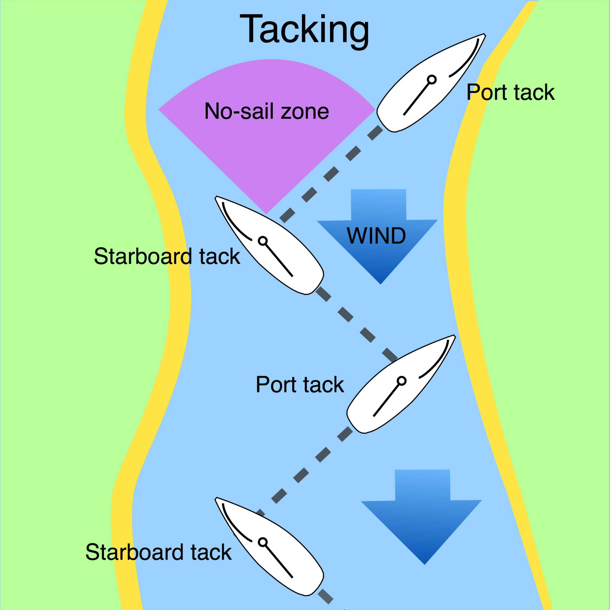

|
Obviously ships can't sail into the wind. So how do they get back home? Is that why Columbus went to America -- because he didn't know how to turn around? No, it turns out ships can sail into the wind, a little. When pointed upwind, a tightly-trimmed sail turns into an airfoil that sucks the ship forward. Most ships can sail up to 45 degrees into the wind, some even closer than that. So by alternating back and forth (see picture) ships can slowly work their way upwind. This maneuver is called "tacking". That's where the expression "a change of tack" comes from. It's not "a change of tact" as many people say. That makes no sense. They are saying "let's stop being nice". Maybe they are confusing tact and tactics. While we're at it, it's chaise longue not "chaise lounge". The former is French for "long chair", the latter is some kind of mutant Frenglish. And another thing. Why does everyone say "instantaneous" and "instantaneously" now when "instant" and "instantly" will work just as well. Gone in an instantaneous? English is complicated enough without adding unneeded syllables. And how is "www" an abbreviation for "world wide web". World wide web is three syllables, www is nine. Think about it. People say "much adieu about nothing" and "I bid you ado". That's backwards. Don't even get me started about "moot" and "mute". Moot means irrelevant, so you say "it's a moot point", not a "mute point". And it's "for all intents and purposes" not "for all intensive purposes", it's "buck naked" not "butt naked", "deep seated" not "deep seeded". Darth Vader never said "Luke, I am your father" and Captain Kirk never said "Scotty, beam me up". At least, not in the TV series. There. Glad that's settled. |
 |